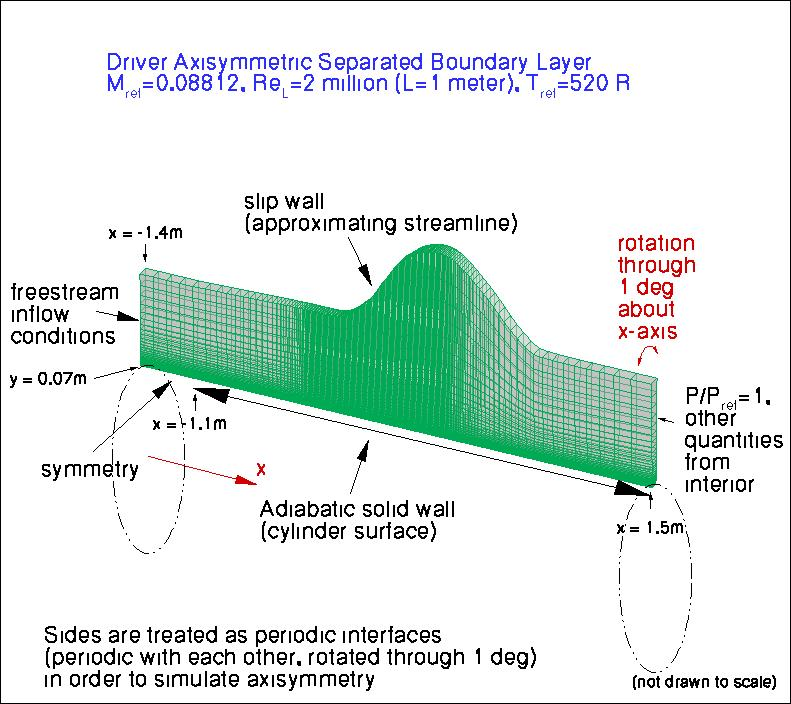
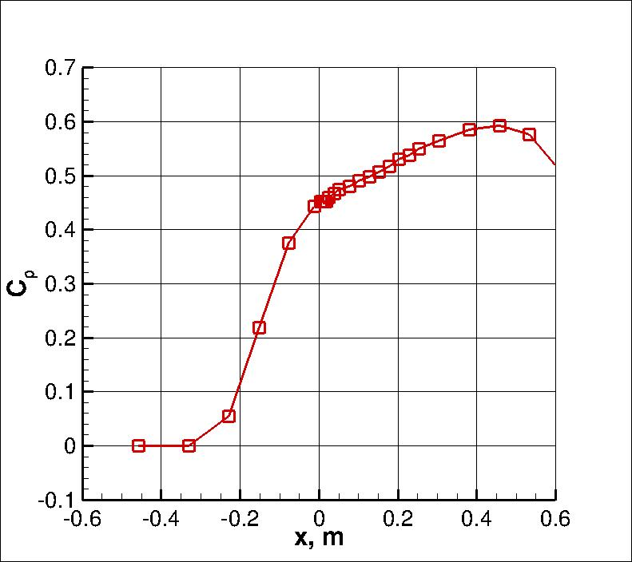
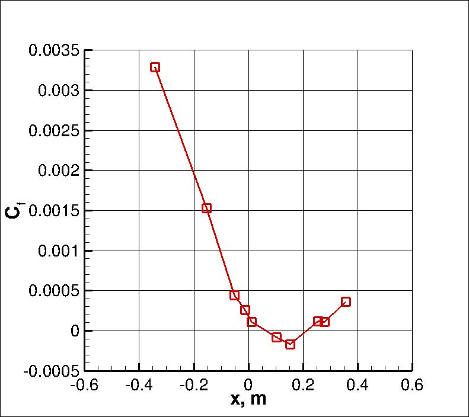
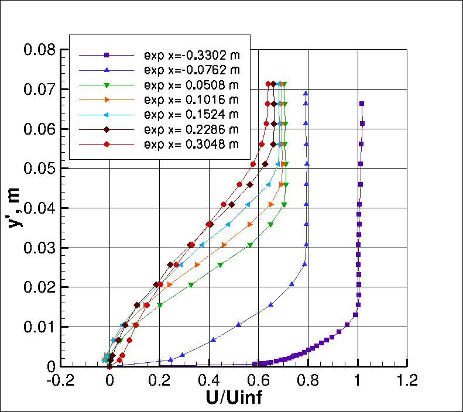
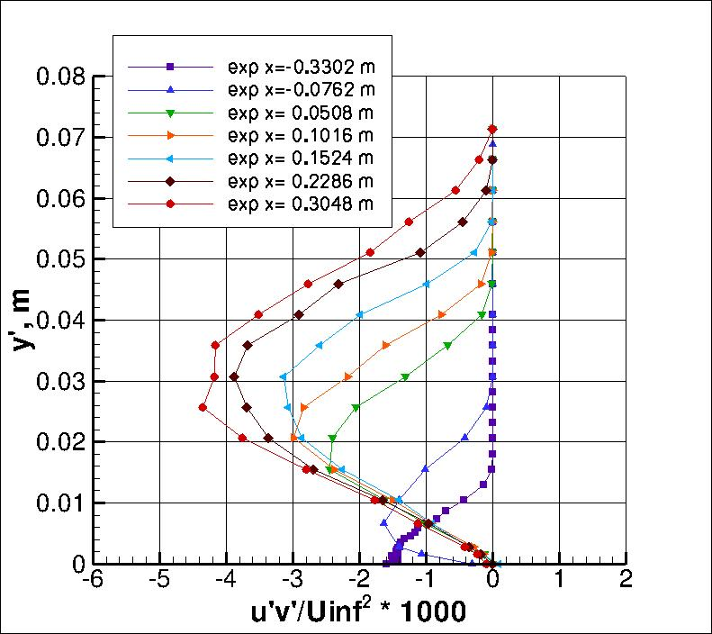

|
Langley Research CenterTurbulence Modeling Resource |
Return to: Turbulence Modeling Resource Home Page
ASBL: Axisymmetric Separated Boundary Layer
The purpose here is to provide a
validation case for turbulence models. Unlike verification, which seeks to
establish that a model has been implemented correctly, validation compares
CFD results against data in an effort to establish a model's ability to
reproduce physics. A large sequence of nested grids of the same family are
provided here if desired. Data are also provided for comparison. For this
particular "essentially incompressible" axisymmetric separated boundary layer case (from Driver),
the data are from an experiment.
The experiment utilized a cylinder of 0.140 m diameter in a tunnel in which an
adverse pressure gradient was imposed over a portion of the flow by diverging the four
tunnel walls. Each wall was deflected by as much as 0.045 m, resulting in an area expansion
ratio of about 1.6. In the experiment, the tunnel sidewall boundary layers were thinned via
suction. In experimental case C (used here), the adverse pressure gradient was severe enough that the flow on
the cylinder separated, resulting in a bubble of length approximately 0.2 m.
The experimentalist provided a streamline shape well outside of the cylinder's boundary layer that can be used
as an inviscid surface for defining the upper boundary condition in a CFD simulation.
The inflow to the domain is adjusted so that the naturally developing turbulent boundary
layer on the cylinder in the CFD solution grows to approximately 0.012 m thick near the position x = -0.3 m (just
upstream of the adverse pressure gradient), as noted in the experiment.
A short region with symmetry is imposed upstream to avoid possible incompatibilities
between freestream inflow and wall BCs.
(Note that particular variations of the BCs at the inflow and outflow may also work and yield similar results
for this problem.)
It is important to note that this axisymmetric case is not a 2-D computation; it uses a
periodic (rotated) grid system with appropriate boundary conditions on the periodic sides of the grid.

Some of the experimental data for this case are shown below.
Velocity and turbulence profiles of interest are chosen at the following x-locations:
x=-0.3302, -0.0762, 0.0508, 0.1016,
0.1524, 0.2286, and 0.3048 (all in meters).
Note that for the Driver data, the wall-normal coordinate y' is defined such that y'=0 on the cylinder surface.
The experimental data reference is: Driver, D. M., "Reynolds Shear Stress Measurements in a
Separated Boundary Layer Flow," AIAA Paper 91-1787, from the AIAA 22nd Fluid Dynamics, Plasma
Dynamics, and Lasers Conference, June 1991, Honolulu, HI,
https://doi.org/10.2514/6.1991-1787.
For the pressure coefficient data, note that it is relative to conditions at the position near
x=-0.4 or so upstream; i.e., Cp is defined to be 0 near this location.




The experimental data used are provided here:
What to Expect:
(Other turbulence model results may be added in the future.)
Note that the OVERFLOW code has documented its results for this validation case (for the SA-noft2 and SST
turbulence models) in NAS Technical Paper 2016-01 (pdf file)
(18.3 MB) by Jespersen, Pulliam, and Childs.
Return to: Turbulence Modeling Resource Home Page
Responsible NASA Official:
Ethan Vogel
RESULTS
LINK TO EQUATIONS
MRR Level
SA
SA eqns
4
SSTm
SSTm eqns
3
SSG/LRR-RSM-w2012
SSG/LRR-RSM-w2012 eqns
3
Wilcox2006-klim-m
Wilcox2006-klim-m eqns
2
EASMko2003-S
EASMko2003-S eqns
1
K-e-Rt
K-e-Rt eqns
1
Page Curator:
Clark Pederson
Last Updated: 11/12/2021